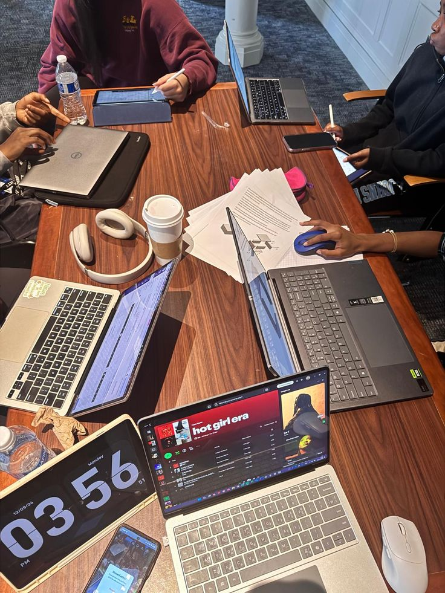
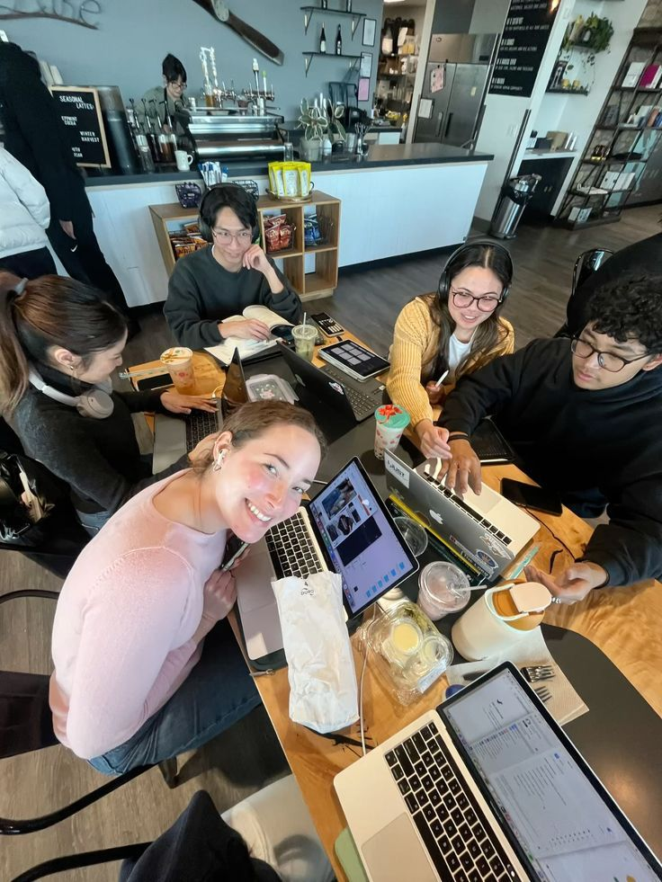
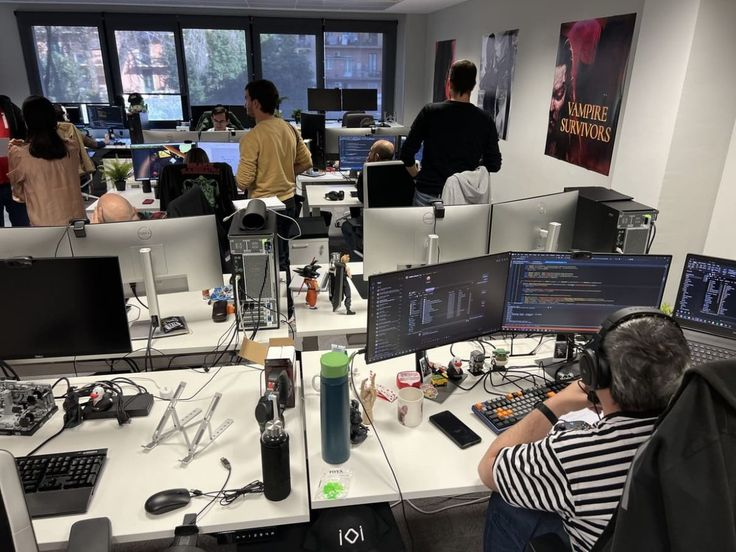
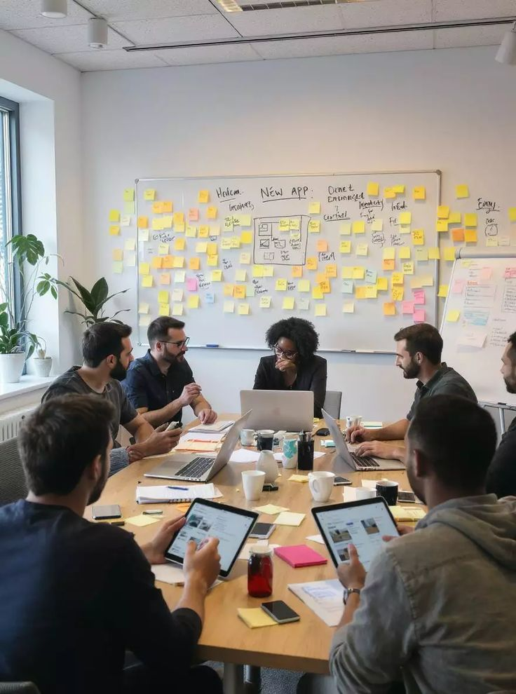

you can't build everything alone.
i might have founded blue particle, but the team is what actually keeps the engine running. adekola, albert, joan, chris, jituboh. managing workflows, compiling technical reports, and aligning timelines with them has taught me more about leadership than any ENT 212 entrepreneurship class ever could.
we argue about implementation details, we spend hours debugging each other's pull requests, and we collectively complain about deadlines that seemed reasonable two weeks ago but now feel like a personal threat. it's a good crew. finding developers who actually care about the final product — who care about the micro-interactions and the data integrity instead of just trying to close the ticket and go to sleep — is incredibly rare.




i'm grateful for them. genuinely. when you're running an organization, you quickly realize that your ideas are only as good as the people who help you execute them. they keep me honest, they keep the code clean, and they make the long sprints feel like a shared adventure instead of a solo sentence.
leadership is something i'm still actively learning. there are days when i get it right — when the communication is clear and everyone knows what they're building and why — and there are days when i realize i've been assuming context that i hadn't actually communicated. the gap between the version of the project in my head and the version in my team's heads is something i have to actively work to close.
that's the actual work of leading. not the vision. not the architecture. the translation.
← Back to Blog